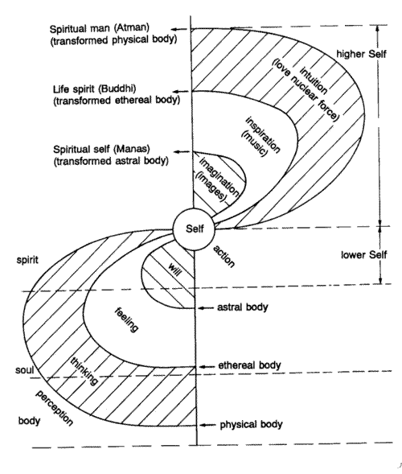

In terms of ontology off levels of the individual self, Rudolph Steiner proposed has no less than four versions, based on combining the seven-fold Theosophic model with the three-fold Rosicrucian triad of body, soul, and spirit.
Dividing the Rosicrucian triad of body, soul,
and spirit into three gives nine principles altogether. This is corelated with
the Theosophical seven-fold model to give a quaternity of physical body, etheric
body, astral body, and consciousness ("ego"), with four future stages:
| 3-fold | 9-fold | 7-fold | 4-fold |
| SPIRIT | Spirit Man | Atma | future
stages / angelic consciousness |
| Life Spirit | Buddhi | ||
| Spirit Self | Manas | ||
| SOUL | Spiritual Soul | Ego | Ego |
| Intellectual Soul | |||
| Sentient Soul | Astral body | Astral body | |
| BODY | Soul Body | ||
| Etheric Body | Etheric Body | Etheric Body | |
| Physical body | Physical body | Physical body |
It hardly needs to be said that the Atma, Buddhi and Manas refrerred to here have absolutely no relation to the original formulations in the Samkhyan and Vedantic traditions of India!

Steiner uses the traditional 4-fold classification as his starting point for classifying nature. According to this, man possesses (that is, has actualised or individualised) all four principles (physical to ego), the animals three (physical to astral), plants two, and minerals one.
ego astral astral etheric etheric etheric physical physical physical physical ............................................. mineral plant animal man |
Here of course we see the concept of "four kingdoms" - mineral, vegetable, animal, and human - each of which corresponds to a higher soul-level; an idea that goes back at least as far as Aristotle (who divided the soul into three faculties: a plant, an animal, and a human (or rational) faculty), and was tremendously influential in Europe and among the Arabs during the Medieval period. Once again, the Greek influence. As far as science goes, it has long since been shown to be irrelevant. It's importance here lies in its metaphoric rather than its literal physical truth.
For Steiner, only the "ego", which he considered the principle of memory and self-consciousness, strongly comparable to psychologist Carl Jung's "Conscious" or "ego" principle, was immortal, and reincarnated. The three bodies were therefore "mortal", as in the Hermetic model.
As for animals, plants, and minerals, Steiner denied they possessed an individual soul (i.e. ego), but spoke instead of "group-egos"; a concept he derived from Theosophy, and which appears to go back to C. W. Leadbeater, the main Neo-theosophical writer.

In each culture-period, Steiner tells us that human evolution evolves one stage (according to the 9-fold classification). Each culture stage lasts for precisely 2160 years, and during this time the Ego reincarnates twice, once as male and once as female, in order to experience everything. So as can be seen from this table, in the present 2160 year period man actualises the highest or "spiritual soul" (which corresponds to the inner Christ-consciousness), in the immediately preceding (Graeco-Latin) period the second or "intellectual soul" was actualised, and so on.
-- Physical body (1) Ancient Indian Etheric body BODY (2) Ancient Persian Soul body (= Astral) (3) Babylonian-Chaldean Sentient soul (4) Greco-Roman Intellectual soul SOUL (5) Present epoch Spiritual soul (6) Sixth culture-epoch Spirit self (7) Seventh culture epoch Life spirit SPIRIT -- Spirit man |
It is difficult to extract anything of value out of such a rigid a scheme as this one. If it tells us anything it is the way in which a powerful and insightful thinker can become caught within his own mental conceptions.

Provided we get away from the rather absurd clockwork cosmology of culture-periods and reincarnations and just consider the four levels of self and three future stages, there seme to be interesting similarities between Steiner's theory of levels of self, Kabbalistic ideas of divisions of the soul (nefesh), and Barbara Ann Brennan's ultimately theosophically-derived paradigm of seven energy bodies.
| Steiner - 9-fold | Steiner -4 fold (with future stages) |
Lurianic Kabbalah 5 subdivisions of Nefesh (soul of universe of Asiyah) |
Barbara Brennan -
7 energy bodies |
| Spirit Man | Atma - Spirit Man
(transformed physical) |
Yehidum (Unity) of Nefesh | 7. Ketheric template |
| Life Spirit | Buddhi - Life Spirit
(transformed etheric) |
Hayyah (Life) of Nefesh | 6.
Celestial (transpersonal emotional) |
| Spirit Self | Manas - Spirit Self
(transformed astral) |
Neshamah (higher Soul) of Nefesh | 5.
Etheric Template (higher etheric) |
|
Spiritual Soul (Christ love) |
Ego |
Ruah of Nefesh (heart - Tifaret) |
4.
Astral
(interpersonal emotional) |
|
Intellectual Soul (intellectual formulations) |
Nefesh of Nefesh | 3. Mental | |
|
Sentient Soul (animal soul - lower emotions & passions) |
Astral body |
Nefesh behemis (animal soul) |
2.
Emotional (selfish emotional) |
| Soul Body | n/a | n/a | |
| Etheric Body | Etheric Body | 1. Etheric | |
| Physical body | Physical body | Physical | Physical |
There are a number of parallels between Rudolph
Steiner and Barbara Brennan's formualtions, which indicate either that the
latter drew (even if unconsciously) from the former, or that they both
independently came upon the same conclusions (indicated eitehr a common
subconscious esoteric bias or else an indepedent perception of the nature of
occult realities (take your pick! lol ;-).
e.g.
But note there are also differences as well - Steiner's "Astral" stratum is much lower on the scale than Barbara Brennan's. Steiner's three higher levels do not match Ms Brennan's. And anyway some themes, like the idea of an "etheric body" immediately beyond the physical body, are a common given in all Theosophical and post-Thesophical thought.
Of more interest perhaps are the parallels with Lurianic Kabbalah. Consider the equivalence of Ruah (associated with the sefirah Tifaret) with the Consciousness Soul (associated with Christ). Now, in the Qabalistic system Christ is one of the archetypes/correspondences associated with their Tifaret (Tiphareth). So it all links. Of course Steiner was initiated into the Rosucrucians and the O.T.O, so Kabbalah would certainly not be unfamiliar to him.

Looking at the seven-fold model now - with physical body, etheric body, astral body, and consciousness ("ego"), and three future stages, each of these future stages represents a progressive transmormation or metamorphosis of one of the four present stages:
|
 graphic from Kees Zoeteman, Gaia-Sophia, p.40 |
There are interesting parellels here with Egyptian, Gurdjieffian, Taoist alchemical, and Aurobinodan formulations regarding the crystillisation of the spiritual body and even the transmumation of the physical. However Steiner, like the Theosophists, did not really have a clear conception of the divinisation of the Earth (although he seemed to touch on this concept a number of times). Instead he saw the world as, having reached its point of maximum materiality, then becoming progressively more subtle and ethereal. This is the opposite to the Lurianic and Aurobinodan positions, and so the transformed physical body Steiner misleadingly refers to as "Atman" is clearly not the same as the supramentalised physical of Sri Aurobindo and Mirra.